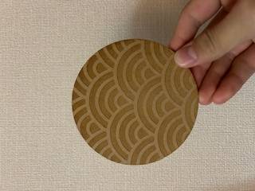
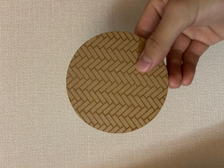

紋の交響
作品のタイトル: 紋の交響 ｜ 設計ファイル: kosuta

表：和柄（青海波）

裏：洋柄（ヘリンボーン）
作品説明
「紋の交響」は、日本の伝統文様と西洋の幾何学的テクスチャを一つの小さな円に重ね合わせることで、文化の対話と視覚の調和を表現した作品です。表面には穏やかな波を繰り返す青海波を配し、裏面には規則的でリズミカルなヘリンボーンを配しました。素材の手触りや切断面の微かな陰影が、柄の織りなすリズムに寄り添い、見る人の呼吸をゆっくりと整えることを意図しています。なぜ心が動くのか…それは、目に見えるパターンが持つ反復性と変化の微妙なバランスが、無意識に「秩序」と「予想外」を同時に刺激するからだと考えています。日常の中でふと手に取り、指でなぞったときに生まれる触覚と視覚の交差点に、記憶や情緒が静かに呼び起こされる。そうした小さな瞬間を大切にするためにこの作品をつくりました。
制作プロセス（メモ・調査・試行したこと）
- 設計ファイル:
kosuta
- 使用ソフトの機能メモ: ベジェ曲線によるパス編集、パターンのタイル化（オブジェクトを配列して繰り返し配置）、パスのブール演算で不要な重なりを削除。グリッドを使ってヘリンボーンの角度と間隔を正確に調整。
- 試したパラメータ:
- 線幅（ストローク）: 0.3mm〜1.0mmで視認性と切断のしやすさを比較。
- パターン間隔: 青海波の波高を数値で調整（10〜20mm帯）してバランスを検証。
- マテリアルの厚み: 2mm〜6mm程度で触感と影の出方を比較。
- ケルフ補正の確認: レーザー／CNCで実際に切る際の幅を想定してパスをオフセットし、実寸との誤差を最小化。
- 参考手順:
- パターンをベクターデータで作成し、タイル化して意図した領域にマスク。
- パスを結合・切り抜きして切断用の最終パスを作成。
- SVGをエクスポート。レーザーやCNC用のソフトで読み込み、パラメータ（出力順・出力速度・出力パワー）を設定。
- 試作として小さな切り出しを行い、微調整後に本番カット。
- 参考にした情報源（調査メモ）: ベクターパターンの作り方、ケルフ補正、素材（合板・MDF・厚紙）の切断特性に関する記事やチュートリアルを参照して設計に反映。
ファイルと使い方
このHTMLと同じフォルダに以下の画像ファイル（wagara.jpeg、yougara.jpeg）および設計ファイル kosuta（SVG/PDF等）を置いてください。ブラウザでこのHTMLを開くことでプレビューできます。
<!-- 画像ファイル名（同一フォルダ） -->
wagara.jpeg
yougara.jpeg
<!-- 設計ファイル -->
kosuta.svg または kosuta.pdf